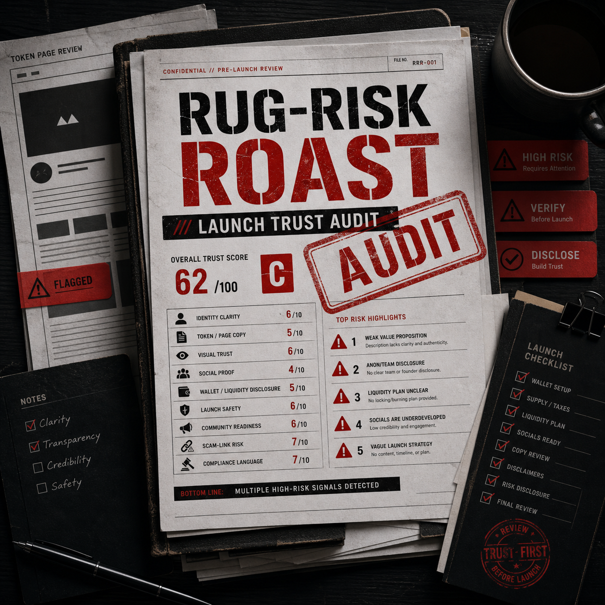

Trust score
Identity, copy, visuals, socials, wallet disclosure, launch safety, community readiness, scam-link risk, and compliance language scored out of 100.
24-hour manual audit
Rug-Risk Roast is a 24-hour manual audit for small crypto launches. We score your token page, socials, disclosures, launch copy, and trust signals, then tell you what to fix.

What you get
Identity, copy, visuals, socials, wallet disclosure, launch safety, community readiness, scam-link risk, and compliance language scored out of 100.
Critical, high, medium, and low severity findings with direct fixes instead of vague advice.
Rewritten token description, X bio, Telegram pin, launch post, and a clear "do not say this" list.
A short execution list for what to fix before launch or before pushing harder publicly.
Manual MVP pricing
Standard price after first 10: $39 or crypto equivalent. Delivery starts after confirmed payment and completed intake.
How it works
Send SOL or USDC to the dedicated audit wallet.
Send token page, socials, copy, and launch details.
We manually score the public trust posture.
You get the scorecard, rewritten copy, and next actions.
Sample scorecard
Rug-Risk Roast is an educational trust-readiness review, not financial, legal, tax, investment, or compliance advice. We do not guarantee token success, price performance, liquidity, listings, community growth, legal safety, or buyer trust. We do not help hide risk, fake trust, create fake volume, or mislead buyers.
Read full risk language